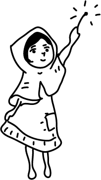

Greetings, I am none other than the indomitable Tin Soldier, and it is with great honor that I unfold the chapters of my compelling narrative within the timeless tale, "The Steadfast Tin Soldier." From the very moment of my creation, I stand proudly, albeit with a singular leg— a testament to the quirks of my manufacturing process. In the face of such an unusual circumstance, my journey takes a poignant turn. Embarking on a thrilling escapade, I navigate the unpredictable currents of life within the delicate confines of a paper boat. Along this tumultuous voyage, fate intertwines my path with a malevolent jack-in-the-box, creating a series of misadventures that test the mettle of my unwavering spirit. Through every challenge, my steadfast resolve remains unshaken, fueled by an unyielding love that blossoms for a delicate paper ballerina. As the intricacies of my narrative unfold, the threads of destiny weave a compelling tapestry that leads me towards a climactic and bittersweet conclusion."
In the enchanting narrative of "The Ugly Duckling," my story unfolds as a unique and distinct departure from the ordinary. From the moment of my birth, I am cast as the clumsy and awkward duckling, a character maligned and ridiculed by my peers due to the perceived shortcomings of my appearance. The world around me echoes with the taunts and laughter of those who fail to see beyond the surface. Enduring the isolating pangs of loneliness and the sting of rejection, I embark on a poignant odyssey of self-discovery. It is a journey fraught with trials and tribulations, a transformative pilgrimage that transcends the limitations of my initial form. In the crucible of adversity, I gradually shed the cloak of awkwardness to emerge as a majestic swan, a symbol of grace and beauty that defies the expectations imposed upon me. This classic tale not only encapsulates the physical metamorphosis from an unassuming duckling to a resplendent swan but also delves deeper into the realms of self-acceptance and love. As the narrative unfolds, the realization dawns that my true beauty and intrinsic worth were always present, merely waiting to be unearthed from beneath the layers of societal judgment.

In the merciless grip of a winter's night, I find myself as a frail and destitute little match girl, shivering on the icy streets—unseen, overlooked, and forgotten by the bustling world around. The biting cold pierces through my worn garments, leaving me desperate for even a flicker of warmth to stave off the harsh realities of my existence.
With trembling hands, I ignite my matches one by one, each flame offering a fleeting reprieve and conjuring ephemeral visions of comfort and joy. In the radiant glow, I am transported to a realm where the biting cold is replaced by the warmth of imagined moments with my departed grandmother. Together, we revel in the echoes of laughter and the comforting embrace of shared memories, a stark contrast to the frigid reality that surrounds me.
Yet, as quickly as the matches illuminate my makeshift sanctuary, their brilliance wanes, leaving me to confront the starkness of my existence once more. The cruel embrace of the cold returns, more biting and unforgiving than before, gnawing at my fragile frame. It is in these moments of despair that I light another match, seeking solace in the ephemeral flames that bring respite from the unforgiving night.
As the matches dwindle, I face the inevitable extinguishing of their warmth, each vanishing flame marking the return to a bleak reality. But in the final moments, a gentle warmth envelops me, offering a reprieve from the harshness of life. It is a tender embrace that takes me into the arms of peace, releasing me from the clutches of my bitter existence.